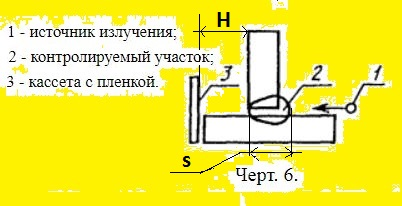

4.2. При ограниченной ширине привариваемого элемента
допускается проводить контроль тавровых сварных сое-
динений с направлением излучения по образующей этого
элемента в соответствии с черт. 6.
4.9. При выборе схемы и направления излучения следует
учитывать:
- расстояние от контролируемого сварного соединения
до радиографической пленки должно быть минимальным и
в любом случае не превышать H=150 мм;
- угол между направлением излучения и нормалью к ра-
диографической пленке в пределах контролируемого за
одну экспозицию участка сварного соединения должен
быть минимальным и в любом случае не превышать 45°.
6.8. Если при контроле пленка располагается на рас-
стоянии Н от обращенной к пленке поверхности контро-
лируемого сварного соединения и выполняется соотноше-
ние (f+s)/H > 10, определенные по снимку размеры пе-
ред их округлением рекомендуется умножать на коэффи-
циент k=(f+s)/(H+f+s), где f - расстояние от источни-
ка излучения до обращенной к источнику поверхности
контролируемого участка сварного соединения, мм; s -
радиационная толщина, мм.
ПРИЛОЖЕНИЕ 4.1. Расстояние f от источника излучения
до обращенной к источнику поверхности контролируемо-
го сварного соединения не должно быть менее значений,
определяемых по формулe f >= Сs, где С=2Ф/К
при Ф/К >= 2 и С=4 при при Ф/К менее 2;
s - радиационная толщина, мм;
Ф - максимальный размер фокусного пятна источника
излучения, мм;
K - требуемая чувствительность контроля, мм.
2. Длина L_max контролируемых за одну экспозицию
участков при контроле по схемам черт. 6 не должна быть
более 0,8 f.
Выберите класс чувствительности по ГОСТ 7512-82
класс чувствител. класс : Выбрать 1, 2 или 3
радиацион.толщина s, мм : Выбрать от 0, но не более 5 мм
фокусное пятно Ф, мм : Выбрать больше 0, но не более 5 мм
расст.(до кассеты) H, мм : Выбрать больше 0, но не более 150 мм
Оптимизация f, мм : Выбрать f больше f_min